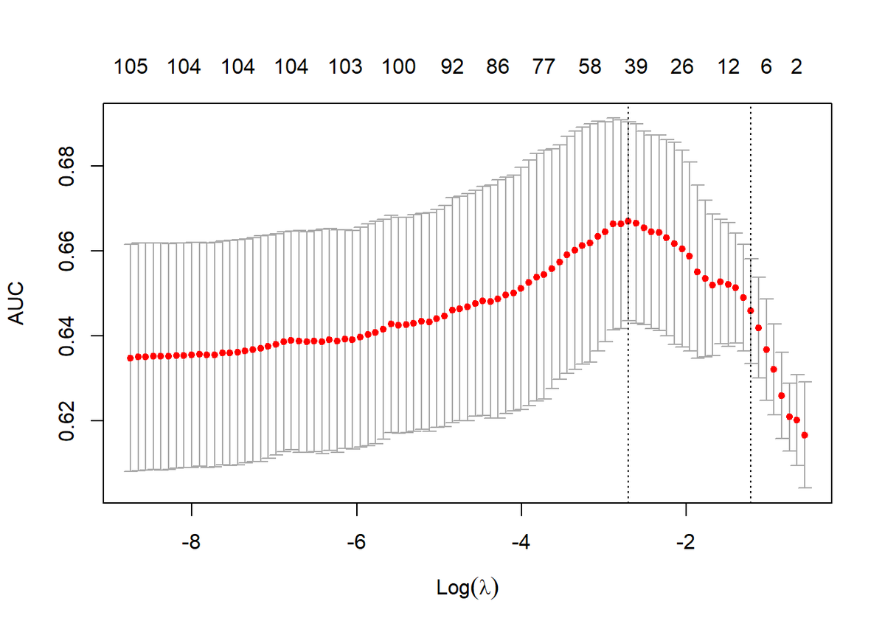
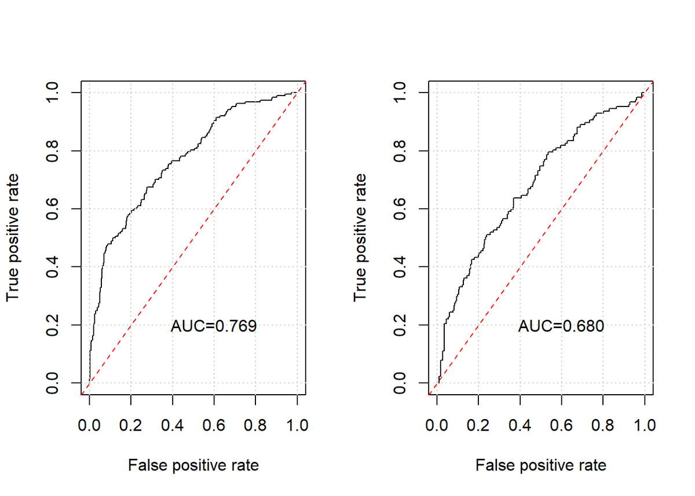
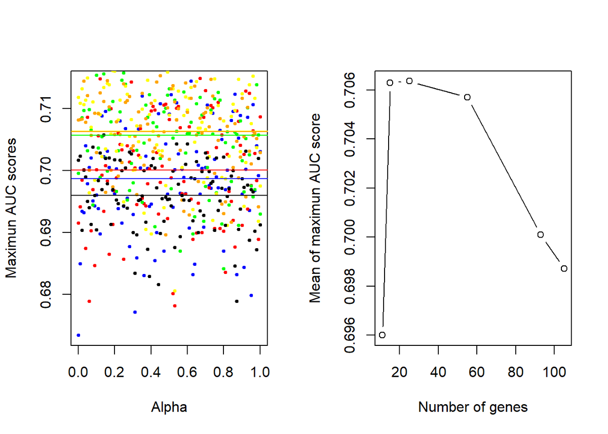
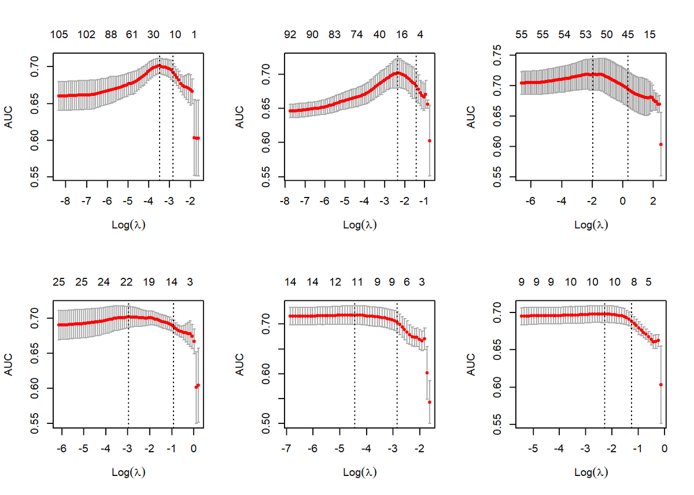
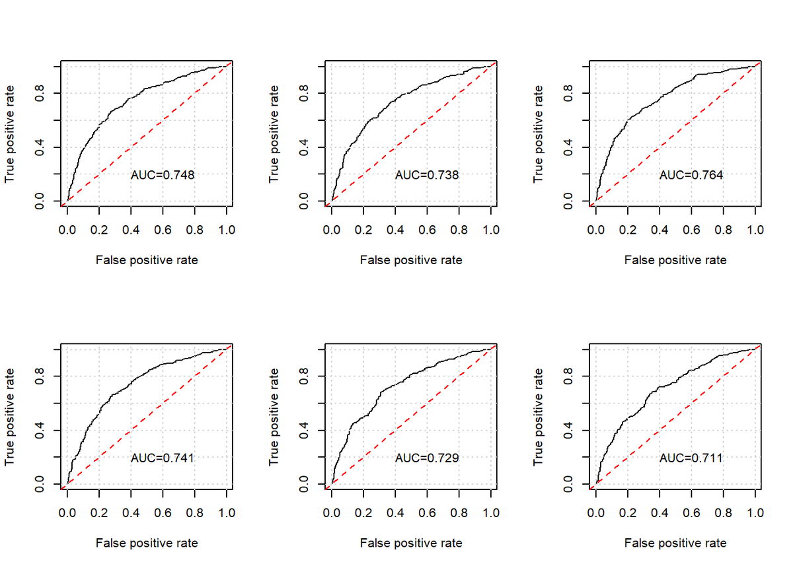
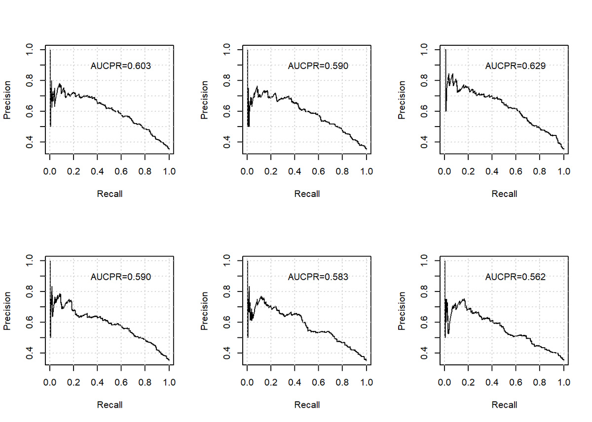
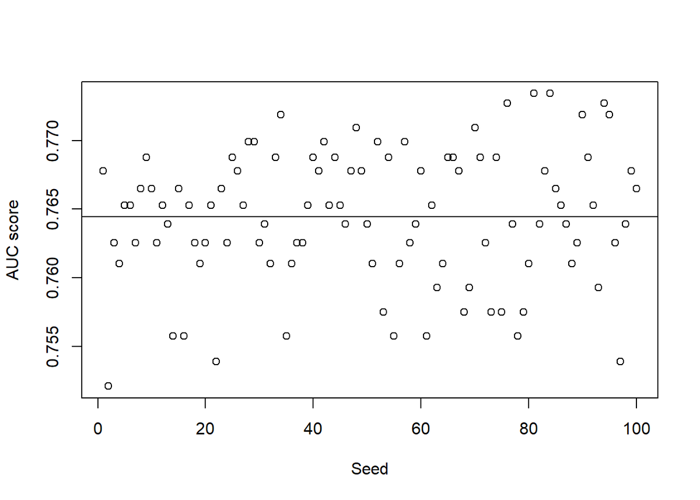
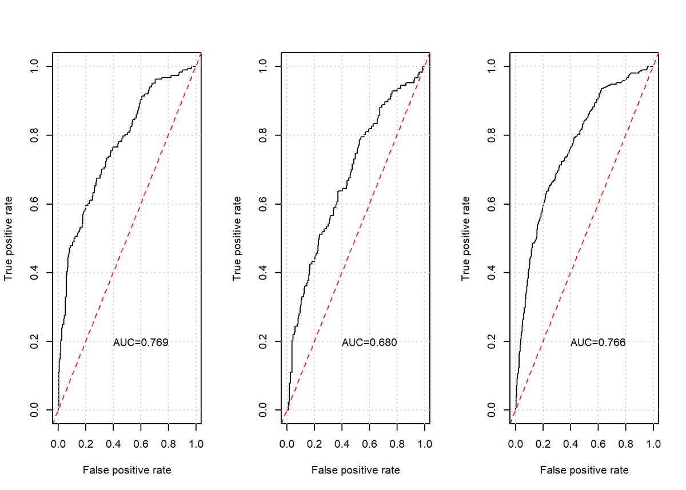

Ebiya Aidu
Ebiya AiduIkuspegi orokorra
Datu klinikoetatik eta gene-adierazpenetik abiatuta, bularreko minbizia duten zein pazientek biziko diren 96 hilabete (8 urte) baino gehiago jakin al daiteke? Epe luzerako aurreikuspenak zailak dira denborak pisu handia duelako; Genomika eta Proteomikako irakasleak zioenez, proba-multzoan lor zitekeen onena 0,74 inguruko AUC zen. Nik lortutako eredu onenak, random forest-ekin hautatutako 58 geneko elastic net batek, oso gertu iritsi zen.
Entrenamendu-datuetako AUCa (0,76 inguru) eta ikusi gabeko datuetako 0,733 gertu daude, eta horrek iradokitzen du ereduak nahiko ondo orokortzen duela.
Datuak
Datu-multzoa unibertsitateko ikastaro batetik dator: 985 paziente, bakoitzak 24.374 zutabe (6 aldagai kliniko eta 24.368 gene-adierazpen), eta entrenamendu-multzoan biziraupenaren emaitza. Proba-multzoak formatu bera du, 985 pazienterekin, baina emaitzarik gabe. Fitxategiak hiru taula ditu: Xtrain, ytrain eta Xtest.
Aurrebista
Datu gordinen lehen errenkadak. Datuak igotzen direnean agertuko dira.
Deskargatu
Dena R fitxategi originalean dago. Excel fitxategiek taula berberak dituzte (Xtrain, Xtest eta ytrain); haietan 24.374 zutabeak bi orritan daude banatuta, Excelen zutabe-mugagatik.
Txosten osoa
Unibertsitateko jatorrizko txostenaren euskarazko itzulpena da, kodearekin eta irudiekin; jatorrizkoa ingelesez dago (irakurri ingelesez). Kodearen iruzkinak itzuli dira, baina irudiek eta kodeko testuek ingelesezko etiketak dituzte. Datu pertsonalak eta fitxategi-bideak kendu dira. Iruzkinak eta ideiak bloke bereizietan gehitu dira.
1. Sarrera
Gure proiektuaren helburua bularreko minbizia duten pazienteen biziraupena aurreikustea da, datu klinikogenetikoetatik abiatuta. Emakumeek 96 hilabete (8 urte) baino gehiago biziko diren aurreikusten saiatuko gara. Teorian, lor genezakeen hurbilketarik onena 0.74ko AUC puntuazioa da 1. proba-multzoan. Horren arrazoia epe luzerako aurreikuspenak egiten ari garela da; beraz, denbora-faktoreak pisu handia du eta zailagoa da ondo asmatzea. Epe laburragorako aurreikuspenak egingo bagenitu, gure emaitzak hobeak izango lirateke.
1.1 Paketeak kargatzea
Lehenik eta behin, paketeak kargatu eta instalatzen ditugu.
Kodea erakutsi
#install.packages("glmnet")
#install.packages("ROCR")
#install.packages("e1071")
#install.packages("randomForest")
#install.packages("boot")
#install.packages("survival")
#install.packages("MASS")
#install.packages("class")
#install.packages("nnet")
#install.packages("arm")
library(boot);
library(survival);
library(MASS);
library(class);
library(nnet);
library(e1071);
library(randomForest);
library(glmnet);
library(ROCR);
library(matrixStats);
#library(arm)
#library(FSelector)1.2 Datuak kargatzea
Gure datuak kargatzen ditugu; matrize gisa kargatutako 3 talde edo objektu nagusik osatzen dute.
Alde batetik, xtrain eta ytrain ditugu, gure entrenamendu-multzoa direnak eta gure aurreikuslea entrenatzeko erabiliko ditugunak. xtrain erabil dezakegu eredua entrenatzeko eta ytrain zein ondo funtzionatzen duen ikusteko, azken hau xtrain-en emaitza ezaguna baita. Bestetik, Xtest dugu, gure 1. proba-multzoaren parte dena. Badakigu ~1000 pertsonaren informazioa eta haien ~24000 gene-adierazpen dituela. Hala ere, ez dugu pertsona horien emaitza, beraz ezin dugu jakin gure ereduak datu berri horiekin zein ondo funtzionatzen duen. Hala eta guztiz ere, emaitzak ikus ditzakegu gure aurreikuslea ikastaroaren ebaluazio-zerbitzarira igotzen badugu.
Azkenik, ereduaren errendimendua 2. proba-multzoan ebaluatuko da, zeinean ez dugun pazienteen daturik ezta haien emaitzarik ere.
Kodea erakutsi
load("path/to/dataChallenge2020_students.Rdata")2. Aurreikuspenak entrenamendu-multzoa zatituz
Lehen hurbilketa egiteko, xtrain eta ytrain bi taldetan zatituko ditugu. ~1000tik 600 gure eredua entrenatzeko erabiliko dira eta gainerakoak balioztatzeko edo zein ondo funtzionatzen duen ikusteko, paziente horiek ez baititugu eredua entrenatzeko erabiltzen.
Kodea erakutsi
#set.seed erabiltzen dugu beti emaitza berdinak lortzeko
set.seed(1)
index<-sample(nrow(Xtrain))
#Aurreikuspenak exekutatzeko, Xtrain bi datu-multzotan zatituko dugu: Entrenamendua eta Balioztatzea.
XsTraining<-Xtrain[index[1:600],]
YsTraining<-ytrain[index[1:600],]
XsValidation<-Xtrain[index[601:nrow(Xtrain)],]
YsValidation<-ytrain[index[601:nrow(Xtrain)],]2.1 Aldagaien hautaketa
Aldagaiak 4 metodo desberdinekin hautatuko ditugu:
Desbideratze estandarrarekin, desbideratze estandar handiena duten lehen 100 geneak hautatuko ditugu. Gero, Minimum redundancy Maximum relevance (mRMR) erabiliz, gure aldagaiak 96ra murrizten ditugu eta begiztarekin desbideratze estandarraren ordena bera lortzen dugu (azken urrats hau ez da beharrezkoa).
limma erabiliz, p-balioaren arabera ordenatuta lehen 5 geneak hautatzen ditugu. Ez dugu p-balioetan gehiegi oinarritu nahi, ez baitu erredundantzia kontuan hartzen. Horregatik, gutxi batzuk soilik hautatzen ditugu.
limma robust erabiliz, p-balioaren arabera ordenatuta lehen 5 geneak ere hautatzen ditugu, lehengo arrazoi beragatik.
Azkenik, bularreko minbiziaren biziraupenarekin lotuta dakizkigun geneak hautatu ditugu. [1]-en arabera badakigu LYVE1, LILRB5, CD209 eta IMPDH2 geneak interesgarriak direla gure proiekturako.
Kodea erakutsi
#Desbideratze estandarra erabiliz lehen 100 geneak hautatzen ditugu
Sds <- colSds(XsTraining)
KeepVar <- order(Sds, decreasing = T)[1:100]
#Multibariantea
library(mRMRe)
set.thread.count(6)## [1] 6Kodea erakutsi
df <- data.frame(y = YsTraining[!is.na(YsTraining[,3]),3], XsTraining[!is.na(YsTraining[,3]),KeepVar])
dd <- mRMR.data(data = df)
salida <- mRMR.classic(data = dd, target_indices = c(1), feature_count = length(KeepVar))
KeepmRMR <- match(colnames(salida@mi_matrix)[salida@filters[[1]]], colnames(Xtrain))
KeepmRMR <- KeepmRMR[!is.na(KeepmRMR)]
print(length(KeepmRMR))## [1] 96Kodea erakutsi
Variables<-0
j<-1
for (i in 1:length(KeepVar)) {
for (k in 1:length(KeepmRMR)) {
if (KeepVar[i]==KeepmRMR[k]) {
Variables[j]<-KeepVar[i]
j<-j+1
}
}
}
#limma erabiliz
XsTraining2 <- XsTraining[!is.na(YsTraining[,3]),]
Design <- cbind(1,YsTraining[!is.na(YsTraining[,3]),3])
library(limma)
fit <- lmFit(t(XsTraining2), Design)
fit2 <- contrasts.fit(fit, c(0,1))
fit2 <- eBayes(fit2)
Keeplimma <- order(fit2$p.value)[1:5]
#limma Robust erabiliz
fit <- lmFit(t(XsTraining2), Design, method = "robust")
fit2 <- contrasts.fit(fit, c(0,1))
fit2 <- eBayes(fit2)
KeeplimmaRobust <- order(fit2$p.value)[1:5]
#Lotutako geneak
#CD209 ez zegoen gure geneen artean
colnames(XsTraining)[15743] #LYVE1## [1] "LYVE1"Kodea erakutsi
colnames(XsTraining)[22926] #LILRB5## [1] "LILRB5"Kodea erakutsi
colnames(XsTraining)[14830] #IMPDH2## [1] "IMPDH2"Gure geneen zutabe-zenbakiak aurkitzeko honela egin genuen. Lehenik begiztak erabiltzen saiatu ginen baina denbora asko behar zuen. Denbora hori aurrezteko xtrain Excelera pasatu genuen. Han, bilatu erabiliz genearen izena aurkitu ahal izan genuen eta, zutabe-zenbakiek bat etorri behar dutenez, gure geneen posizioa R-n ere lortu genuen.
Azkenik, hautatutako aldagaiak bektore batean sartzen ditugu eta bakar bihurtzen ditugu, ez baitugu gene bera errepikatuta izan nahi. Horrela, gure kasuan 105 aldagai lortzen ditugu.
Kodea erakutsi
SelectedColumns<-c(Variables,Keeplimma,KeeplimmaRobust,15743,22926,14830)
SelectedColumns<-unique(SelectedColumns)
Keep2 <- c(SelectedColumns)
print(length(Keep2))## [1] 105Kodea erakutsi
#Funtzioak definitzen
plotROC <- function(preds0,YsTraining){
samples <- !is.na(YsTraining)
pred <- prediction(preds0[samples],YsTraining[samples])
perf<- performance(pred,"tpr","fpr")
plot(perf)
AUC<-performance(pred,"auc")@y.values[[1]]
grid()
text(.6,.2,sprintf("AUC=%0.3f", AUC))
abline(0,1,col="red", lty = 2)
}
plotPR <- function(preds0,YsTraining){
samples <- !is.na(YsTraining)
pred <- prediction(preds0[samples],YsTraining[samples])
perf<- performance(pred,"prec","rec")
plot(perf)
AUC<-performance(pred,"aucpr")@y.values[[1]]
grid()
text(.6,.9,sprintf("AUCPR=%0.3f", AUC))
}2.2 Aurreikuslea entrenatzea
Lasso eta Ridge aurreikusleen arteko aldea alpha parametroa da: lehenengoarentzat 1 da eta bigarrenarentzat 0. Beraz, alpha onena jakiteko begizta bat egingo dugu eta AUC baliorik altuena duena hautatuko dugu. Horrela, aurreikusle onena lortuko dugu. Hala ere, ez dugu azken aurreikusle gisa erabiliko, lehen hurbilketa egiteko eta ondo funtzionatzen duen ikusteko baizik.
Kodea erakutsi
set.seed(10);
#Elastic Net
cvFitElastic<-cv.glmnet(XsTraining[!is.na(YsTraining[,3]),Keep2],
YsTraining[!is.na(YsTraining[,3]),3],
family="binomial",nfolds=3,type.measure = "auc",alpha=0)
aux<-max(cvFitElastic$cvm)
alfa<-0
for (i in seq(0,1,0.1)) {
cvFitElastic<-cv.glmnet(XsTraining[!is.na(YsTraining[,3]),Keep2],
YsTraining[!is.na(YsTraining[,3]),3],
family="binomial",nfolds=3,type.measure = "auc",alpha=i)
if (aux < max(cvFitElastic$cvm)) {
aux<-max(cvFitElastic$cvm)
alfa<-i
}
}
cvFitElastic<-cv.glmnet(XsTraining[!is.na(YsTraining[,3]),Keep2],
YsTraining[!is.na(YsTraining[,3]),3],
family="binomial",nfolds=3,type.measure = "auc",alpha=alfa)
#Aux hautatua (AUC balio maximoa) eta dagokion alpha
print(aux)## [1] 0.6865415Kodea erakutsi
print(alfa)## [1] 0.2Kodea erakutsi
plot(cvFitElastic);
Grafiko hau AUC puntuazio altuena (0.6865) duen alpha onenari dagokio, gure 105 geneentzat. Alpha balio txikia (0.2) izateak aurreikusle honek Ridge batek bezala jokatzea eragiten du.
Kodea erakutsi
predsTrain<-predict(cvFitElastic,XsTraining[,Keep2],s="lambda.min",type="response")
predsValid<-predict(cvFitElastic,XsValidation[,Keep2],s="lambda.min",type="response")
layout(matrix(c(1:2), nrow=1))
plotROC(predsTrain,YsTraining[,3])
plotROC(predsValid,YsValidation[,3])
Ikus dezakegunez, gure aurreikusleak lan ona egin du. Entrenamendu-datuekin 0.769ko AUC lortu genuen eta balioztatze-datuekin 0.680ko AUC. Honekin pozik egon gaitezke eta aurreikusle hau hurrengo urratsean datu guztiak entrenatzeko aurreikusle nagusi gisa erabiliko dugu. Gure aurreikusleak gainmoldaketa saihesten duenez, alde hau balioztatze-datuetan dugun paziente kopuru txikiagatik izan daiteke.
3. Aurreikuspenak entrenamendu-multzo osoarekin
Lehen alpha onena lortu dugu, baina nola jakin zenbat genek ematen duten AUC emaitzarik onena?
Galdera horri erantzuteko, geneak ezabatzeko eta haien errendimendua ikusteko metodo bat behar dugu. randomforest-etik atera daitekeen genearen garrantzi-taula erabiliko dugu. Atalase desberdinak ezarriko ditugu eta zein ondo funtzionatzen duen ikusiko dugu onena hautatzeko. Gure ereduak hobetzen ez badu, hautatutako gene guztiak dituen eredu osoa erabiltzen amaituko genuke, beraz azken atalean bezala izango litzateke.
Aurretik, “eskuz” inplementatutako stepAIC backward eredu bat erabiltzen saiatu ginen, non garrantzi-taula erreferentzia gisa erabiliz gure uneko begiztatik kanpo beste begizta bat egongo zen. Horrela, begiztak gene bat ezabatuz (garrantzi-taularen arabera) eta barruan alpha onena bilatuz (gene-luzera berriarekin) funtzionatzen zuen, gene-luzera onena aurkitu arte. Hala ere, metodo honek denbora asko behar zuen (4 ordu). Gainera, geneak ordena jakin batean ezabatzen genituen eta ez genituen konbinazio guztiak probatzen stepAIC-ek egiten duen bezala; horretarako hirugarren begizta bat diseinatu beharko genuke, baina ez zela merezi uste nuen.
3.1 Random Forest
Kodea erakutsi
#Orain eredua Xtrain-eko datu guztiekin entrenatzen dugu
#RandomForest
set.seed(10)
Rforest.fit<-randomForest(Xtrain[!is.na(ytrain[,3]),Keep2],
factor(ytrain[!is.na(ytrain[,3]),3]))
print(Rforest.fit)##
## Call:
## randomForest(x = Xtrain[!is.na(ytrain[, 3]), Keep2], y = factor(ytrain[!is.na(ytrain[, 3]), 3]))
## Type of random forest: classification
## Number of trees: 500
## No. of variables tried at each split: 10
##
## OOB estimate of error rate: 31.19%
## Confusion matrix:
## 0 1 class.error
## 0 535 51 0.08703072
## 1 230 85 0.73015873Kodea erakutsi
Importance<-as.data.frame(importance(Rforest.fit))
MatrizAux<-cbind(Keep2,Importance)
library(plyr)
ImportanceNames<-arrange(MatrizAux,desc(MeanDecreaseGini))
print(ImportanceNames)## Keep2 MeanDecreaseGini
## 1 2 15.453975
## 2 1 10.693578
## 3 3 9.101839
## 4 3722 6.059211
## 5 5768 5.740132
## 6 12541 5.582623
## 7 7493 5.473755
## 8 21497 5.412127
## 9 5560 5.350352
## 10 20252 5.012011
## 11 11521 4.946211
## 12 12106 4.804727
## 13 771 4.699915
## 14 16972 4.641563
## 15 17766 4.623838
## 16 11697 4.434654
## 17 19308 4.216603
## 18 22122 4.198002
## 19 23053 4.157748
## 20 5109 4.117754
## 21 15611 4.057957
## 22 4046 4.054713
## 23 15544 4.027710
## 24 6468 4.013413
## 25 14131 4.009656
## 26 10833 3.977135
## 27 18262 3.976087
## 28 682 3.972475
## 29 7556 3.966418
## 30 14364 3.963248
## 31 11278 3.960516
## 32 8891 3.921129
## 33 17670 3.849479
## 34 15311 3.848842
## 35 1909 3.838096
## 36 19899 3.798447
## 37 10569 3.785514
## 38 7430 3.775691
## 39 20112 3.770232
## 40 5459 3.764301
## 41 17849 3.751219
## 42 5503 3.739030
## 43 23216 3.735937
## 44 6475 3.728333
## 45 2183 3.717807
## 46 17607 3.705924
## 47 17361 3.667037
## 48 11477 3.663409
## 49 11882 3.656225
## 50 15810 3.651424
## 51 8511 3.574373
## 52 15743 3.570420
## 53 23198 3.557528
## 54 4452 3.539867
## 55 1382 3.531807
## 56 22926 3.495683
## 57 5826 3.494875
## 58 513 3.486067
## 59 5175 3.480166
## 60 11742 3.478591
## 61 20879 3.474111
## 62 2688 3.464583
## 63 24346 3.429299
## 64 3379 3.429049
## 65 23339 3.384051
## 66 12140 3.332338
## 67 20517 3.282622
## 68 13878 3.274901
## 69 3732 3.274128
## 70 10492 3.272915
## 71 3788 3.254821
## 72 14623 3.247913
## 73 6963 3.245178
## 74 23789 3.227715
## 75 14830 3.222729
## 76 20548 3.219979
## 77 7518 3.213578
## 78 24176 3.206850
## 79 19375 3.189023
## 80 3566 3.183423
## 81 22540 3.182906
## 82 1547 3.168558
## 83 21021 3.161866
## 84 14111 3.144574
## 85 3967 3.113660
## 86 23778 3.108779
## 87 11760 3.088790
## 88 14981 3.086184
## 89 21352 3.084150
## 90 18650 3.053914
## 91 10709 3.025851
## 92 23510 3.024889
## 93 6222 3.014874
## 94 17219 2.984437
## 95 448 2.973287
## 96 1014 2.967805
## 97 8480 2.963803
## 98 18912 2.912994
## 99 23152 2.890199
## 100 12825 2.875481
## 101 20738 2.866819
## 102 24330 2.866273
## 103 3199 2.821414
## 104 10085 2.786360
## 105 20419 2.695167ImportanceNames 2 zutabeko matrize bat da, gene bakoitzaren garrantzia beheranzko ordenan erakusten duena. Ordena honetan oinarrituko gara eta hurrengo urratsean atalase desberdinak ezarriko ditugu. Hautatutako atalaseak MeanDecreaseGini-ren 6 balio dira: 0 (hasierako eredua), 3, 3.5, 4, 4.5 eta 5.
3.2 Atalase onena bilatzea
Kodea erakutsi
#Lehenik atalase desberdinak dituzten gure bektoreak definitzen ditugu
KeepOrdenadoCompleto<-ImportanceNames[,1]
KeepOrdenadoThres3<-0
pos<-1
KeepOrdenadoThres3_5<-0
pos1<-1
KeepOrdenadoThres4<-0
pos2<-1
KeepOrdenadoThres4_5<-0
pos3<-1
KeepOrdenadoThres5<-0
pos4<-1
for (i in 1:dim(ImportanceNames)[1]) {
if (ImportanceNames[i,2]>=3) {
KeepOrdenadoThres3[pos]<-ImportanceNames[i,1]
pos<-pos+1
}
if (ImportanceNames[i,2]>=3.5) {
KeepOrdenadoThres3_5[pos1]<-ImportanceNames[i,1]
pos1<-pos1+1
}
if (ImportanceNames[i,2]>=4) {
KeepOrdenadoThres4[pos2]<-ImportanceNames[i,1]
pos2<-pos2+1
}
if (ImportanceNames[i,2]>=4.5) {
KeepOrdenadoThres4_5[pos3]<-ImportanceNames[i,1]
pos3<-pos3+1
}
if (ImportanceNames[i,2]>=5) {
KeepOrdenadoThres5[pos2]<-ImportanceNames[i,1]
pos4<-pos4+1
}
}Begizta bat egiten dugu gure atalase bakoitzerako alpha onena bilatzeko. Begizta hau egiten ari garenez, aprobetxa dezakegu itzulinguru bakoitzeko balio maximo guztiak gordetzeko. 100 begizta egiten ari garela kontuan hartuta, 100 balio maximo lortuko ditugu, bat alpha bakoitzeko.
Kodea erakutsi
set.seed(9);
#Osoa
cvFitElasticCom<-cv.glmnet(Xtrain[!is.na(ytrain[,3]),KeepOrdenadoCompleto],
ytrain[!is.na(ytrain[,3]),3],
family="binomial",nfolds=3,type.measure = "auc",alpha=0)
auxCom<-max(cvFitElasticCom$cvm)
alfaCom<-0
VectorMaximosCom<-0
posC<-1
#3ko atalasea
cvFitElastic3<-cv.glmnet(Xtrain[!is.na(ytrain[,3]),KeepOrdenadoThres3],
ytrain[!is.na(ytrain[,3]),3],
family="binomial",nfolds=3,type.measure = "auc",alpha=0)
aux3<-max(cvFitElastic3$cvm)
alfa3<-0
VectorMaximos3<-0
pos3<-1
#3.5eko atalasea
cvFitElastic3_5<-cv.glmnet(Xtrain[!is.na(ytrain[,3]),KeepOrdenadoThres3_5],
ytrain[!is.na(ytrain[,3]),3],
family="binomial",nfolds=3,type.measure = "auc",alpha=0)
aux3_5<-max(cvFitElastic3_5$cvm)
alfa3_5<-0
VectorMaximos3_5<-0
pos3_5<-1
#4ko atalasea
cvFitElastic4<-cv.glmnet(Xtrain[!is.na(ytrain[,3]),KeepOrdenadoThres4],
ytrain[!is.na(ytrain[,3]),3],
family="binomial",nfolds=3,type.measure = "auc",alpha=0)
aux4<-max(cvFitElastic4$cvm)
alfa4<-0
VectorMaximos4<-0
pos4<-1
#4.5eko atalasea
cvFitElastic4_5<-cv.glmnet(Xtrain[!is.na(ytrain[,3]),KeepOrdenadoThres4_5],
ytrain[!is.na(ytrain[,3]),3],
family="binomial",nfolds=3,type.measure = "auc",alpha=0)
aux4_5<-max(cvFitElastic4_5$cvm)
alfa4_5<-0
VectorMaximos4_5<-0
pos4_5<-1
#5eko atalasea
cvFitElastic5<-cv.glmnet(Xtrain[!is.na(ytrain[,3]),KeepOrdenadoThres5],
ytrain[!is.na(ytrain[,3]),3],
family="binomial",nfolds=3,type.measure = "auc",alpha=0)
aux5<-max(cvFitElastic5$cvm)
alfa5<-0
VectorMaximos5<-0
pos5<-1
VectorAlfa<-seq(0,1,0.01)
for (i in seq(0,1,0.01)) {
cvFitElasticCom<-cv.glmnet(Xtrain[!is.na(ytrain[,3]),KeepOrdenadoCompleto],
ytrain[!is.na(ytrain[,3]),3],
family="binomial",nfolds=3,type.measure = "auc",alpha=i)
cvFitElastic3<-cv.glmnet(Xtrain[!is.na(ytrain[,3]),KeepOrdenadoThres3],
ytrain[!is.na(ytrain[,3]),3],
family="binomial",nfolds=3,type.measure = "auc",alpha=i)
cvFitElastic3_5<-cv.glmnet(Xtrain[!is.na(ytrain[,3]),KeepOrdenadoThres3_5],
ytrain[!is.na(ytrain[,3]),3],
family="binomial",nfolds=3,type.measure = "auc",alpha=i)
cvFitElastic4<-cv.glmnet(Xtrain[!is.na(ytrain[,3]),KeepOrdenadoThres4],
ytrain[!is.na(ytrain[,3]),3],
family="binomial",nfolds=3,type.measure = "auc",alpha=i)
cvFitElastic4_5<-cv.glmnet(Xtrain[!is.na(ytrain[,3]),KeepOrdenadoThres4_5],
ytrain[!is.na(ytrain[,3]),3],
family="binomial",nfolds=3,type.measure = "auc",alpha=i)
cvFitElastic5<-cv.glmnet(Xtrain[!is.na(ytrain[,3]),KeepOrdenadoThres5],
ytrain[!is.na(ytrain[,3]),3],
family="binomial",nfolds=3,type.measure = "auc",alpha=i)
VectorMaximosCom[posC]<-max(cvFitElasticCom$cvm)
posC<-posC+1
if (auxCom < max(cvFitElasticCom$cvm)) {
auxCom<-max(cvFitElasticCom$cvm)
alfaCom<-i
}
VectorMaximos3[pos3]<-max(cvFitElastic3$cvm)
pos3<-pos3+1
if (aux3 < max(cvFitElastic3$cvm)) {
aux3<-max(cvFitElastic3$cvm)
alfa3<-i
}
VectorMaximos3_5[pos3_5]<-max(cvFitElastic3_5$cvm)
pos3_5<-pos3_5+1
if (aux3_5 < max(cvFitElastic3_5$cvm)) {
aux3_5<-max(cvFitElastic3_5$cvm)
alfa3_5<-i
}
VectorMaximos4[pos4]<-max(cvFitElastic4$cvm)
pos4<-pos4+1
if (aux4 < max(cvFitElastic4$cvm)) {
aux4<-max(cvFitElastic4$cvm)
alfa4<-i
}
VectorMaximos4_5[pos4_5]<-max(cvFitElastic4_5$cvm)
pos4_5<-pos4_5+1
if (aux4_5 < max(cvFitElastic4_5$cvm)) {
aux4_5<-max(cvFitElastic4_5$cvm)
alfa4_5<-i
}
VectorMaximos5[pos5]<-max(cvFitElastic5$cvm)
pos5<-pos5+1
if (aux5 < max(cvFitElastic5$cvm)) {
aux5<-max(cvFitElastic5$cvm)
alfa5<-i
}
}
layout(matrix(c(1:2), nrow=1,byrow = T))
plot(VectorAlfa,VectorMaximosCom,col="blue",type="p",cex=0.75,pch=20,xlab="Alpha", ylab="Maximun AUC scores")
lines(VectorAlfa,VectorMaximos3,col="red",type="p",cex=0.75,pch=20)
lines(VectorAlfa,VectorMaximos3_5,col="green",type="p",cex=0.75,pch=20)
lines(VectorAlfa,VectorMaximos4,col="yellow",type="p",cex=0.75,pch=20)
lines(VectorAlfa,VectorMaximos4_5,col="orange",type="p",cex=0.75,pch=20)
lines(VectorAlfa,VectorMaximos5,col="black",type="p",cex=0.75,pch=20)
abline(h=mean(VectorMaximosCom),col="blue")
abline(h=mean(VectorMaximos3),col="red")
abline(h=mean(VectorMaximos3_5),col="green")
abline(h=mean(VectorMaximos4),col="yellow")
abline(h=mean(VectorMaximos4_5),col="orange")
abline(h=mean(VectorMaximos5),col="black")
plot(c(length(KeepOrdenadoCompleto),length(KeepOrdenadoThres3),length(KeepOrdenadoThres3_5),length(KeepOrdenadoThres4),length(KeepOrdenadoThres4_5),length(KeepOrdenadoThres5)),c(mean(VectorMaximosCom),mean(VectorMaximos3),mean(VectorMaximos3_5),mean(VectorMaximos4),mean(VectorMaximos4_5),mean(VectorMaximos5)),type="b",xlab="Number of genes", ylab="Mean of maximun AUC score")
Ezkerreko grafikoan, puntu bakoitzak alpha eta atalase bakoitzeko lortutako AUC maximo bat adierazten du. Lerro bakoitzak balio maximo horien batez bestekoa adierazten du eta lerro hauek puntu gisa irudikatzen dira eskuineko grafikoan.
- Urdina: 105 geneko eredu osoa.
- Gorria: MeanDecreaseGini-ren 3ko atalasea, 93 gene dituena.
- Berdea: MeanDecreaseGini-ren 3.5eko atalasea, 58 gene dituena.
- Horia: MeanDecreaseGini-ren 4ko atalasea, 23 gene dituena.
- Laranja: MeanDecreaseGini-ren 4.5eko atalasea, 15 gene dituena.
- Beltza: MeanDecreaseGini-ren 5eko atalasea, 12 gene dituena.
Ikus dezakegu, batez beste, emaitza hobeak lortzen ditugula geneen kopurua murrizten dugunean. 4ko atalaseak batez besteko onena duen arren, horrek ez du esan nahi AUC onena marrazten duenik edo aurreikuspen onenak egiten dituenik. Orokorrean, gure ereduak balio hobeak lortzen dituela ematen digu ideia, atalasea 3.5 eta 4.5 artean dagoenean.
3.3 Eredu onenak marraztea
Atalase bakoitzerako lortu ditugun eredu onenak marraztuko ditugu.
Kodea erakutsi
#Orain onenak marrazten ditugu
layout(matrix(c(1:6), nrow=2,byrow = T))
cvFitElasticCom<-cv.glmnet(Xtrain[!is.na(ytrain[,3]),KeepOrdenadoCompleto],
ytrain[!is.na(ytrain[,3]),3],
family="binomial",nfolds=3,type.measure = "auc",alpha=alfaCom)
cvFitElastic3<-cv.glmnet(Xtrain[!is.na(ytrain[,3]),KeepOrdenadoThres3],
ytrain[!is.na(ytrain[,3]),3],
family="binomial",nfolds=3,type.measure = "auc",alpha=alfa3)
cvFitElastic3_5<-cv.glmnet(Xtrain[!is.na(ytrain[,3]),KeepOrdenadoThres3_5],
ytrain[!is.na(ytrain[,3]),3],
family="binomial",nfolds=3,type.measure = "auc",alpha=alfa3_5)
cvFitElastic4<-cv.glmnet(Xtrain[!is.na(ytrain[,3]),KeepOrdenadoThres4],
ytrain[!is.na(ytrain[,3]),3],
family="binomial",nfolds=3,type.measure = "auc",alpha=alfa4)
cvFitElastic4_5<-cv.glmnet(Xtrain[!is.na(ytrain[,3]),KeepOrdenadoThres4_5],
ytrain[!is.na(ytrain[,3]),3],
family="binomial",nfolds=3,type.measure = "auc",alpha=alfa4_5)
cvFitElastic5<-cv.glmnet(Xtrain[!is.na(ytrain[,3]),KeepOrdenadoThres5],
ytrain[!is.na(ytrain[,3]),3],
family="binomial",nfolds=3,type.measure = "auc",alpha=alfa5)
plot(cvFitElasticCom)
plot(cvFitElastic3)
plot(cvFitElastic3_5)
plot(cvFitElastic4)
plot(cvFitElastic4_5)
plot(cvFitElastic5)
Kodea erakutsi
max(VectorMaximosCom)## [1] 0.7144286Kodea erakutsi
max(VectorMaximos3)## [1] 0.7182504Kodea erakutsi
max(VectorMaximos3_5)## [1] 0.7247179Kodea erakutsi
max(VectorMaximos4)## [1] 0.7185329Kodea erakutsi
max(VectorMaximos4_5)## [1] 0.7214539Kodea erakutsi
max(VectorMaximos5)## [1] 0.7057409Ikus dezakegunez, aldagaiak murrizten ditugunean, Elastic Net-ek sortutako zigorrak ere ezabatzen ari gara; zigor horiek zarata gisa hartu behar ez diren arren, uste dut seinale baliotsua ezabatzen ari garela. Lortutako AUC balio maximoa begiratzen badugu, 3.5eko atalaserako izan zen.
3.3 Eredu onenen ROC kurbak
Kodea erakutsi
predsC<-predict(cvFitElasticCom,Xtrain[,KeepOrdenadoCompleto],s="lambda.min",type="response")
preds3<-predict(cvFitElastic3,Xtrain[,KeepOrdenadoThres3],s="lambda.min",type="response")
preds3_5<-predict(cvFitElastic3_5,Xtrain[,KeepOrdenadoThres3_5],s="lambda.min",type="response")
preds4<-predict(cvFitElastic4,Xtrain[,KeepOrdenadoThres4],s="lambda.min",type="response")
preds4_5<-predict(cvFitElastic4_5,Xtrain[,KeepOrdenadoThres4_5],s="lambda.min",type="response")
preds5<-predict(cvFitElastic5,Xtrain[,KeepOrdenadoThres5],s="lambda.min",type="response")
layout(matrix(c(1:6), nrow=2,byrow = T))
plotROC(predsC,ytrain[,3])
plotROC(preds3,ytrain[,3])
plotROC(preds3_5,ytrain[,3])
plotROC(preds4,ytrain[,3])
plotROC(preds4_5,ytrain[,3])
plotROC(preds5,ytrain[,3])
ROC kurbak ikusi ondoren, seguruago egon gaitezke atalaserik onena 3.5 dela, 0.764ko AUC ematen baitu.
3.4 Eredu onenen Precision Recall kurbak
Kodea erakutsi
layout(matrix(c(1:6), nrow=2,byrow = T))
plotPR(predsC,ytrain[,3])
plotPR(preds3,ytrain[,3])
plotPR(preds3_5,ytrain[,3])
plotPR(preds4,ytrain[,3])
plotPR(preds4_5,ytrain[,3])
plotPR(preds5,ytrain[,3])
Sailkatzaile perfektu batek 1 berdineko precision eta 1 berdineko recall izango lituzke, hau da, sailkatzaileak ez luke daturik gaizki sailkatuko. Gure kasuan, gure emaitzak perfekziotik urrun badaude ere, onena 3.5eko atalasea da, kurbaren azpiko area onena duelako.
3.5 Gordetzeko kode-lerroak
Kodea erakutsi
#Igotzeko kode-lerroak
PredsElasticNet<-predict(cvFitElastic3_5,Xtest[,KeepOrdenadoThres3_5],s="lambda.1se",type="response")
write.table(PredsElasticNet,file="PredsElasticNet3_5.csv",col.names=FALSE,sep=",")4. Egonkortasuna
Egonkortasuna probatzeko, gure eredu onenean (3.5eko atalasea) set.seed aldatuko dugu eta zein ondo funtzionatzen duen ikusiko dugu.
Kodea erakutsi
AUC_Values<-0
j<-1
for (i in 1:100) {
set.seed(i);
cvFitElastic3_5<-cv.glmnet(Xtrain[!is.na(ytrain[,3]),KeepOrdenadoThres3_5],
ytrain[!is.na(ytrain[,3]),3],
family="binomial",nfolds=3,type.measure = "auc",alpha=alfa3_5)
preds3_5<-predict(cvFitElastic3_5,Xtrain[,KeepOrdenadoThres3_5],s="lambda.min",type="response")
samples <- !is.na(ytrain[,3])
pred <- prediction(preds3_5[samples],ytrain[,3][samples])
AUC<-performance(pred,"auc")@y.values[[1]]
AUC_Values[j]<-AUC
j<-j+1
}
layout(1)
plot(AUC_Values,xlab="Seed", ylab="AUC score")
abline(h=mean(AUC_Values))
Kodea erakutsi
StabMatrix<-matrix(c(min(AUC_Values),max(AUC_Values),mean(AUC_Values),median(AUC_Values),sd(AUC_Values)),nrow=1)
colnames(StabMatrix)<-c("Min Value","Max Value","Mean","Median","Standard Deviation")
print(StabMatrix)## Min Value Max Value Mean Median Standard Deviation
## [1,] 0.7520938 0.7734222 0.7644498 0.7652581 0.004866613Ikus dezakegunez, gure ereduak 0.75 eta 0.77 artean aurreikusten du etengabe, 0.004ko desbideratze estandar txikiarekin. Honek gure eredua egonkorra dela ondorioztatzera eramaten gaitu.
5. Emaitzak
Kodea erakutsi
layout(matrix(c(1:3), nrow=1,byrow = T))
plotROC(predsTrain,YsTraining[,3])
plotROC(predsValid,YsValidation[,3])
plotROC(preds3_5,ytrain[,3])
Hauek dira lortutako azken emaitzak. Lehen grafikoan gure 105 geneko eredu osoaren entrenamendu-emaitzak ikus ditzakegu. Bigarren grafikoan 105 gene horietarako lortu dugun balioztatzea eta azken grafikoan gure eredu onenaren (58 gene, 3.5eko atalasea) ROC kurba ikus dezakegu.
Azkenik, ondoriozta dezakegu, batez beste, gure ereduak %76.44ko zehaztasunez aurreikusten duela bularreko minbizia duen emakume bat 8 urte baino gehiago biziko den ala ez gure Entrenamendu-multzoarekin. set.seed desberdinekin probatuta, 1. proba-multzoan (eredua entrenatzeko erabili ez diren datuak) %73.29ko emaitza lortu dugu, eta horrela %74ko helburutik oso gertu egotea lortu dugu.
HTMLa sortzeko denbora estimatua: 15 min
6. Bibliografia
[1] Liu, L., Chen, Z., Shi, W., Liu, H., & Pang, W. (2019). Breast cancer survival prediction using seven prognostic biomarker genes. Oncology letters, 18(3), 2907–2916. https://doi.org/10.3892/ol.2019.10635